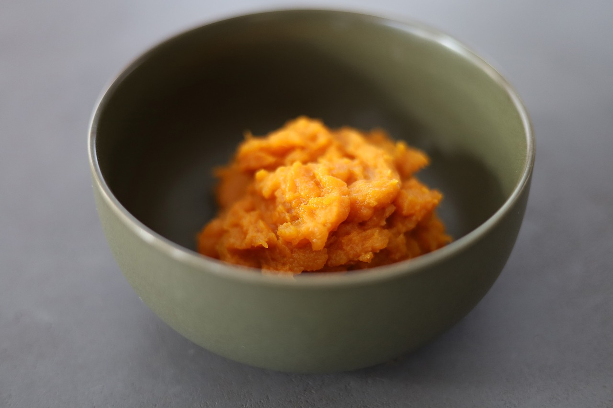

Mash Sweet Potatos

Description
This deliciouses recipe of plain but simple mash sweet potatos will make any dogo go crazy.
The dish is only for the best. It is a dish of mighty warriors.
Ingrediants
Steps
- Wash and peel the sweet potato
- Dice it into cubes
- Boil it in 1 liter of water
- Check the potato for softness after 20 minutes (stab a diced potato with a fork)